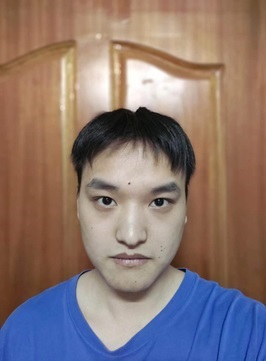
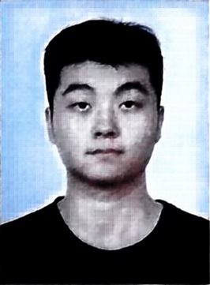
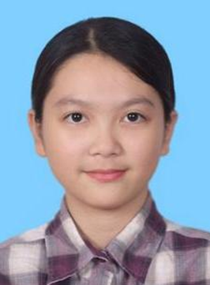
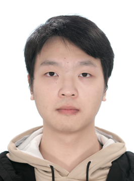
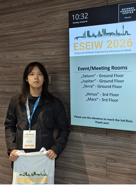
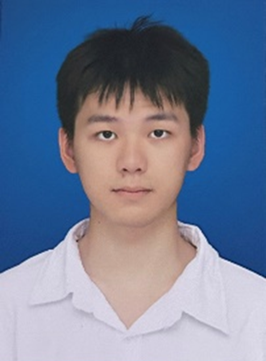

邓联赛2023级硕士生毕业去向：京东 研究成果 论文 面向软件验证的带反馈增强的逐步验证器选择方法研究.硕士学位论文 · 2026 MFH: A Multi-faceted Heuristic Algorithm Selection Approach for Software Verification.arXiv preprint arXiv:2503.22228 · 2025 CFStra: Enhancing Configurable Program Analysis Through LLM-driven Strategy Selection Based on Code Features.the 18th Theoretical Aspects of Software Engineering Conference · 2024 · CCF C类 专利与软件著作权 软件验证算法预测方法和装置、电子设备、存储介质. CN2025110427270 基于代码特征的大语言模型驱动策略选择增强可配置程序分析软件 基于间接标记的软件验证分步算法的智能选择软件
陈晨2022级硕士生毕业去向：美团 研究成果 论文 基于契约的嵌入式软件链式验证方法研究.硕士学位论文 · 2026 A Contract-Based Framework for Formal Verification of Embedded Software.Proceedings of the 10th International Symposium on Dependable Software Engineering, Theories, Tools and Applications · 2024 · CCF C类
林志伟2024级硕士生 研究成果 论文 Understanding the Performance-Effectiveness Trade-Offs of AddressSanitizer in Real-World Programs: An Empirical Study.Proceedings of the 41st IEEE/ACM International Conference on Automated Software Engineering · 2026 · CCF A Generative Reasoning vs. Conventional Analysis: How Well Do LLMs Detect Data Races in Concurrent Programs?Proceedings of the 17th International Conference on Internetware · 2026 · CCF C LLM-Assisted Concurrent Unit Test Synthesis Guided by Static Shared-Memory Analysis.Proceedings of the 8th International Conference on Blockchain, Artificial Intelligence, and Trustworthy Systems · 2026 · CCF C From Coverage to Cognition: A Survey of LLM-Assisted and Agentic Fuzzing.Proceedings of the 8th International Conference on Blockchain, Artificial Intelligence, and Trustworthy Systems · 2026 · CCF C Speed, Space, and Safety: A Multi-Dimensional Empirical Study of Optimized AddressSanitizer.Proceedings of the 8th International Conference on Blockchain, Artificial Intelligence, and Trustworthy Systems · 2026 · CCF C 专利与软件著作权 基于多步智能体的应用程序分析方法、装置、设备及介质. CN202611258618.7 基于可扩展标签对比和存储结构优化的轻量级内存错误检测软件 [简称：LMSan] V1.0 (登记号：2025SR2553076) 获奖 2025中国软件大会仓颉编程语言挑战赛三等奖
胡俊杰2024级硕士生 研究成果 论文 Verifier-Constrained Neural-Symbolic Synthesis of Formal Program Specifications.Data Intelligence · 2027 · CAS Q2 Formally Specifying the Intended Behavior of the Program: LLM-Driven Neuro-Symbolic Program Specification Synthesis.Proceedings of the 64th Annual Meeting of the Association for Computational Linguistics (Volume 3: System Demonstrations) · 2026 · CCF A ACSLBench: A Verified C/ACSL Corpus and Benchmark with Compositional Call Chains for Formal Specification Synthesis.Proceedings of the 41st IEEE/ACM International Conference on Automated Software Engineering (Tools and Datasets) · 2026 · CCF A Spec-Skill: A Pluggable Coding-Agent Plugin for Neuro-symbolic Program Specification Synthesis.Companion Proceedings of the 2026 ACM SIGPLAN International Conference on Systems, Programming, Languages, and Applications: Software for Humanity · 2026 When Large Language Models Meet Formal Theorem Proving: A Survey.Knowledge Science, Engineering and Management — KSEM 2026 Workshops · 2026 · CCF C 大模型驱动的形式化定理证明：综述与展望.Computer Science · 2026 · CCF中文T2 专利与软件著作权 一种基于状态码驱动高效微调的程序形式化规约自动生成方法及系统. CN202611091462.8 获奖 CCL 2026亮点论文奖
王颖2024级硕士生 研究成果 论文 Synergizing LLM-Driven Semantic Reasoning with Assertion-Guided Analysis for Enhanced Vulnerability Detection.IEEE International Conference on Software Analysis, Evolution and Reengineering (ERA Track) · 2026 · CCF B 专利与软件著作权 融合大模型语义推理的断言导向漏洞检测方法. CN202610073326X 协同LLM语义推理的程序路径约束生成与漏洞分析软件（登记号：2026SR0312595）
奚佳新2024级硕士生 研究成果 论文 Understanding the Performance-Effectiveness Trade-Offs of AddressSanitizer in Real-World Programs: An Empirical Study.Proceedings of the 41st IEEE/ACM International Conference on Automated Software Engineering · 2026 · CCF A From Coverage to Cognition: A Survey of LLM-Assisted and Agentic Fuzzing.Proceedings of the 8th International Conference on Blockchain, Artificial Intelligence, and Trustworthy Systems · 2026 · CCF C Speed, Space, and Safety: A Multi-Dimensional Empirical Study of Optimized AddressSanitizer.Proceedings of the 8th International Conference on Blockchain, Artificial Intelligence, and Trustworthy Systems · 2026 · CCF C
黄俊杰2024级硕士生 研究成果 论文 Preserving Concurrency-Revealing Seeds in Fuzzing of Concurrent Programs via Tuple-Based Coverage Evaluation.IEEE International Conference on Software Analysis, Evolution and Reengineering (ERA Track) · 2026 · CCF B 专利与软件著作权 一种基于线程并发二元关系覆盖的模糊测试方法. CN202610287939.3 一种面向C/C++并发程序库的测试用例生成方法. CN2025108112588
袁子轩2024级硕士生 研究成果 论文 IDPVerifier: Verifying Interrupt-driven Programs Efficiently via Heuristic and Reduced Partial-order Constraints.Companion Proceedings of the 34th ACM International Conference on the Foundations of Software Engineering (IVR Track) · 2026 · CCF A
林雅佳2024级硕士生 研究成果 论文 How Well Does Knowledge Injection Enhance LLM-aided Formal Protocol Modeling?IEEE International Conference on Software Analysis, Evolution and Reengineering (ERA Track) · 2026 · CCF B
于康朔2025级硕士生 研究成果 论文 Keeping Software Knowledge Alive: Toward Shared Semantic Views for Human-Agent Software Evolution.Proceedings of the 26th IEEE International Conference on Data Mining (Blue Sky Track) · 2026 · CCF B Mining Evidence-Linked Claims from Software Repositories for Contradiction-Aware Knowledge Diagnosis.Proceedings of the 26th IEEE International Conference on Data Mining (Blue Sky Track) · 2026 · CCF B 专利与软件著作权 基于领域特征图与数据流约束的测试脚本自动生成方法. CN202610571957.4 基于语义中间表示与分层检索增强的嵌入式软件测试脚本自动生成方法. CN202610571950.2 基于大模型的领域软件智能化测试用例生成软件 V1.0（登记号：2026SR0804879） 获奖 2026研究生国家奖学金
廖欣茵2025级硕士生 研究成果 论文 Towards Accurate Thread Sharing Analysis via Synchronization-Aware Dynamic Tracing.Proceedings of the 20th Theoretical Aspects of Software Engineering Conference · 2026 · CCF C Generative Reasoning vs. Conventional Analysis: How Well Do LLMs Detect Data Races in Concurrent Programs?Proceedings of the 17th International Conference on Internetware · 2026 · CCF C 专利与软件著作权 基于多步智能体的应用程序分析方法、装置、设备及介质. CN202611258618.7
吴文杰2025级硕士生 研究成果 论文 Verifier-Constrained Neural-Symbolic Synthesis of Formal Program Specifications.Data Intelligence · 2027 · CAS Q2 Spec-Skill: A Pluggable Coding-Agent Plugin for Neuro-symbolic Program Specification Synthesis.Companion Proceedings of the 2026 ACM SIGPLAN International Conference on Systems, Programming, Languages, and Applications: Software for Humanity · 2026 LLM-Generated Separation Logic Specifications for Heap-Manipulating Programs: Are We There Yet?Proceedings of the 12th International Symposium on Dependable Software Engineering, Theories, Tools and Applications · 2026 · CCF C 获奖 CCL 2026亮点论文奖 中国国际大学生创新大赛（2026）省级铜奖 2026西点创客创新创业大赛粤港澳大湾区分站赛优胜奖
张俊2025级硕士生 研究成果 论文 Towards Accurate Thread Sharing Analysis via Synchronization-Aware Dynamic Tracing.Proceedings of the 20th Theoretical Aspects of Software Engineering Conference · 2026 · CCF C DtTsa: A Dynamic Thread-Sharing Analysis Tool for Multithreaded Programs.Proceedings of the 42nd IEEE International Conference on Software Maintenance and Evolution (Tool Demo) · 2026 · CCF B 专利与软件著作权 一种面向多线程程序的动态线程共享分析方法及设备. CN202610919302.1
胡联合2025级硕士生 研究成果 论文 NL2VBench: A Benchmark for End-to-End Natural-Language to Verifiable Rust Generation.Proceedings of the 41st IEEE/ACM International Conference on Automated Software Engineering (Tools and Datasets) · 2026 · CCF A Toward Verified Code from Natural Language: Understanding Pipeline Design for Formally Verified Rust Program Generation.Proceedings of the 37th International Symposium on Software Reliability Engineering · 2026 · CCF B 专利与软件著作权 面向Rust形式化验证的上下文感知错误选择与修复轨迹优化方法和装置. CN202610861014.5 获奖 2026研究生国家奖学金 中国国际大学生创新大赛（2026）省级铜奖
李健衡2025级硕士生 研究成果 论文 Verihar: A Portable Verification Harness Framework for Aerospace Software IP Across Heterogeneous Backends.Proceedings of the 17th International Conference on Reliability, Maintainability, and Safety · 2026 · CCF等级未标注 A Tiered Certification Framework for Trustworthy Reuse of Aerospace Embedded Software IP.Proceedings of the 17th International Conference on Reliability, Maintainability, and Safety · 2026 · CCF等级未标注 获奖 ICRMS 2026最佳论文奖
王明煜2025级硕士生 研究成果 论文 Bridging Kernel Drivers and Virtual Device Models with LLM-Powered Automation.Proceedings of the 64th Annual Meeting of the Association for Computational Linguistics (Volume 3: System Demonstrations) · 2026 · CCF A DevGen: Automated Generation of Virtual Device Models for Kernel Drivers via Large Language Models.Companion Proceedings of the 34th ACM International Conference on the Foundations of Software Engineering (IVR Track) · 2026 · CCF A 专利与软件著作权 一种基于大语言模型引导的内核驱动虚拟设备生成与模糊测试方法. CN202610168967.3 获奖 2026“仓颉杯”智能编程大赛二等奖
刘元哲2025级硕士生 研究成果 论文 IDPVerifier: Verifying Interrupt-driven Programs Efficiently via Heuristic and Reduced Partial-order Constraints.Companion Proceedings of the 34th ACM International Conference on the Foundations of Software Engineering (IVR Track) · 2026 · CCF A Atomicity Violation Detection for Interrupt-Driven Programs via Incrementally Exploring Concurrent Paths.IEEE/ACM 48th International Conference on Software Engineering (NIER Track) · 2026 · CCF A From potential to confirmed: Effective detection of atomicity violations in interrupt-driven programs via guided memory access graph.Journal of Systems and Software · 2026 · CCF B
王少豪2025级硕士生 研究成果 论文 Understanding Real-World Ordering-Related Concurrency Bugs under Weak-Memory and Cross-Architecture Settings.Proceedings of the 41st IEEE/ACM International Conference on Automated Software Engineering · 2026 · CCF A 获奖 2026研究生国家奖学金 第八届中国研究生人工智能创新大赛校级三等奖
陈溢桐2025级硕士生 研究成果 论文 When Large Language Models Meet Quantum Programming: A Review.Proceedings of the 5th Quantum Computation Conference · 2026
柯汶君2026级硕士生 研究成果 论文 TLCrafter: Peeling the Layers of Natural Language to Reveal Temporal Logic Specifications.Proceedings of the 41st IEEE/ACM International Conference on Automated Software Engineering (Tools and Datasets) · 2026 · CCF A From Biological Questions to Computation Tree Logic: Structure-Aware Translation with LLMs.Proceedings of the 20th International Conference on Bioinformatics and Biomedicine (Poster) · 2026 · CCF B 专利与软件著作权 语句转换方法、装置、电子设备以及存储介质. CN202511775475.2 大模型辅助自然语言描述转化时序逻辑规约生成软件 [简称：TLCrafter] V1.0（登记号：2026SR1036507） 获奖 第八届中国研究生人工智能创新大赛校级三等奖 中国国际大学生创新大赛（2026）省级铜奖
张雨晨2026级硕士生 研究成果 论文 VerusSeek: Retrieval-Augmented LLM-Based Proof Synthesis for Rust Programs.Proceedings of the 41st IEEE/ACM International Conference on Automated Software Engineering (Tools and Datasets) · 2026 · CCF A Enhancing LLM-based Proof Synthesis for Rust Programs via Semantic Chunking and Hierarchical Context Expansion.Proceedings of the 20th Theoretical Aspects of Software Engineering Conference · 2026 · CCF C 专利与软件著作权 一种面向 Rust/Verus 程序的自动化形式化证明生成方法、装置及系统. CN202610889073.3 获奖 2026研究生国家奖学金 2026中国软件大会Rust软件原型开发竞赛一等奖 中国国际大学生创新大赛（2026）省级铜奖
张祥昀2026级硕士生 研究成果 论文 Conservative Hybrid SQL Rewriting with Rules, Retrieval, and LLM Reasoning.Proceedings of the 35th ACM International Conference on Information and Knowledge Management · 2026 · CCF B Adapting Lightweight Large Language Models for Code Generation and Translation Through Multilingual Solution Pairing.Proceedings of the 13th International Conference on Cyber Security and Cloud Computing · 2026 · CCF C A Direction-Aware Study of LLM-Based Code Translation Across Eight Programming Languages.Proceedings of the 20th International Symposium on Empirical Software Engineering and Measurement · 2026 · CCF B 获奖 第八届中国研究生人工智能创新大赛校级三等奖 2026中国软件大会Rust软件原型开发竞赛三等奖
鲁文健2026级硕士生 研究成果 论文 Bridging Kernel Drivers and Virtual Device Models with LLM-Powered Automation.Proceedings of the 64th Annual Meeting of the Association for Computational Linguistics (Volume 3: System Demonstrations) · 2026 · CCF A DevGen: Automated Generation of Virtual Device Models for Kernel Drivers via Large Language Models.Companion Proceedings of the 34th ACM International Conference on the Foundations of Software Engineering (IVR Track) · 2026 · CCF A 专利与软件著作权 一种基于大语言模型引导的内核驱动虚拟设备生成与模糊测试方法. CN202610168967.3 获奖 2026“仓颉杯”智能编程大赛二等奖
俞诗源2026级硕士生 研究成果 论文 When Large Language Models Meet Quantum Programming: A Review.Proceedings of the 5th Quantum Computation Conference · 2026 获奖 中国国际大学生创新大赛（2026）省级铜奖
郑小春2026级硕士生 研究成果 论文 From Natural Language Requirements to Temporal Logic Specifications with LLMs: A Survey.Proceedings of the 13th International Conference on Cyber Security and Cloud Computing · 2026 · CCF C 获奖 2026中国软件大会Rust软件原型开发竞赛三等奖
王泉贺2023级本科生保研：天津大学 研究成果 论文 An Empirical Study of Problem-Aligned Multilingual Code Generation and Directed Code Translation by Large Language Models.ESEM 2026 · CCF B A Direction-Aware Study of LLM-Based Code Translation Across Eight Programming Languages.ESEM 2026 Emerging Results Track · CCF B Trustworthy Programming Language Translation with Large Language Models: A Focused Review.WCCIS 2026 获奖 2026年（第19届）中国计算机设计大赛三等奖（国家级） 2026年（第19届）中国计算机设计大赛一等奖（西北地区赛）
胡义坤2023级本科生保研：南京大学 研究成果 论文 Formally Specifying the Intended Behavior of the Program: LLM-Driven Neuro-Symbolic Program Specification Synthesis.Proceedings of the 64th Annual Meeting of the Association for Computational Linguistics (Volume 3: System Demonstrations) · 2026 · CCF A 大模型驱动的形式化定理证明：综述与展望.计算机科学 · 2026 · CCF中文期刊T2 When Large Language Models Meet Formal Theorem Proving: A Survey.KSEM 2026 Workshops · CCF C 获奖 2026年（第19届）中国计算机设计大赛三等奖（国家级） 2026年（第19届）中国计算机设计大赛一等奖（西北地区赛）